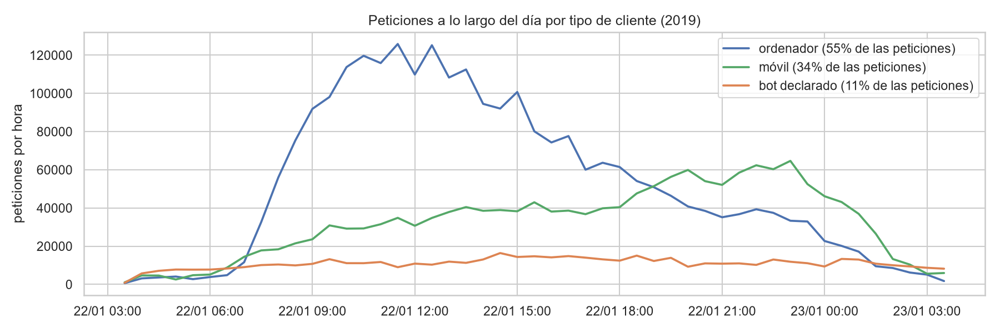
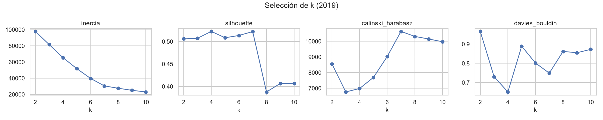
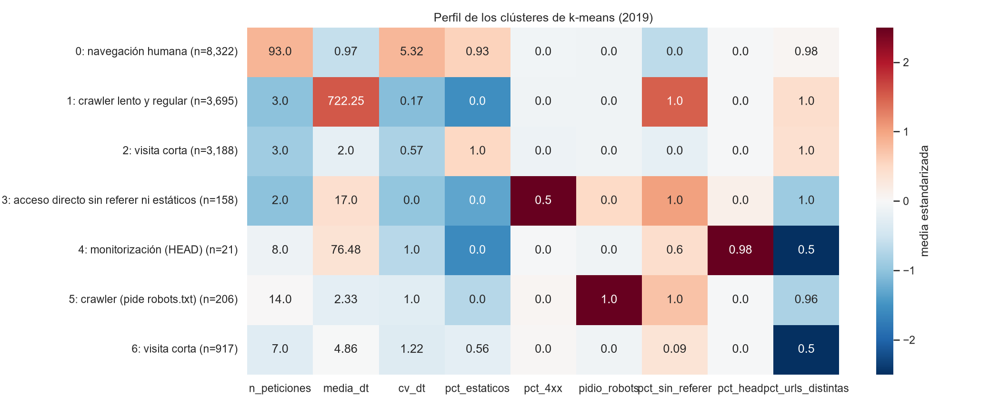

Humanos frente a bots
¿Se puede distinguir el tráfico humano del de los bots en una web solo por cómo se comportan las visitas?
Pregunta y datos
Muchos bots se identifican (Googlebot, GPTBot…), pero los scrapers y los agentes de IA envían el user-agent de un Chrome cualquiera. Agrupo las sesiones de un log real sin etiquetas y solo al final compruebo si los grupos coinciden con lo que cada visitante dice ser.
| Datos | 24 h de una tienda online real: 2,34 M de peticiones → 80 423 sesiones → 16 507 de ordenador |
|---|---|
| Método | k-means (k = 7) sobre 9 variables de comportamiento; contraste con DBSCAN y Ward |
| Validación | 81,5 % de los bots declarados en grupos automatizados frente al 1,9 % de los navegadores (ARI 0,744) |
| Hallazgo | 229 bots camuflados: user-agent de navegador y comportamiento de bot |
El ritmo del día

Elección de k

Tipos de comportamiento


Cuadernos
El método se desarrolla en un cuaderno principal y se aplica en otros dos. Se pueden leer en GitHub con todas sus salidas, sin ejecutar nada.
trabajo_bots_vs_humanos.ipynb: parseo del log, sesiones, selección de variables, clustering, validación y la herramientaanalizar_log. Entrena el modelo con las primeras 24 h del log de 2019.analisis_dia2.ipynb: aplica ese modelo, sin reentrenar, a las 24 h siguientes. Mantiene la proporción de tráfico humano del primer día.comparacion_2025.ipynb: comprueba si el modelo generaliza a un log de 2025 de un organismo público (213 205 peticiones, de finales de septiembre a principios de octubre). Reentrena con esos datos y valida con las reglas de ataque que acompañan al dataset. Es un borrador en revisión.
Conclusión
El comportamiento basta para separar gran parte del tráfico automatizado sin mirar el user-agent, y el modelo aplicado al día siguiente sin reentrenar mantiene la proporción de tráfico humano (81,3 % frente a 81,8 %).